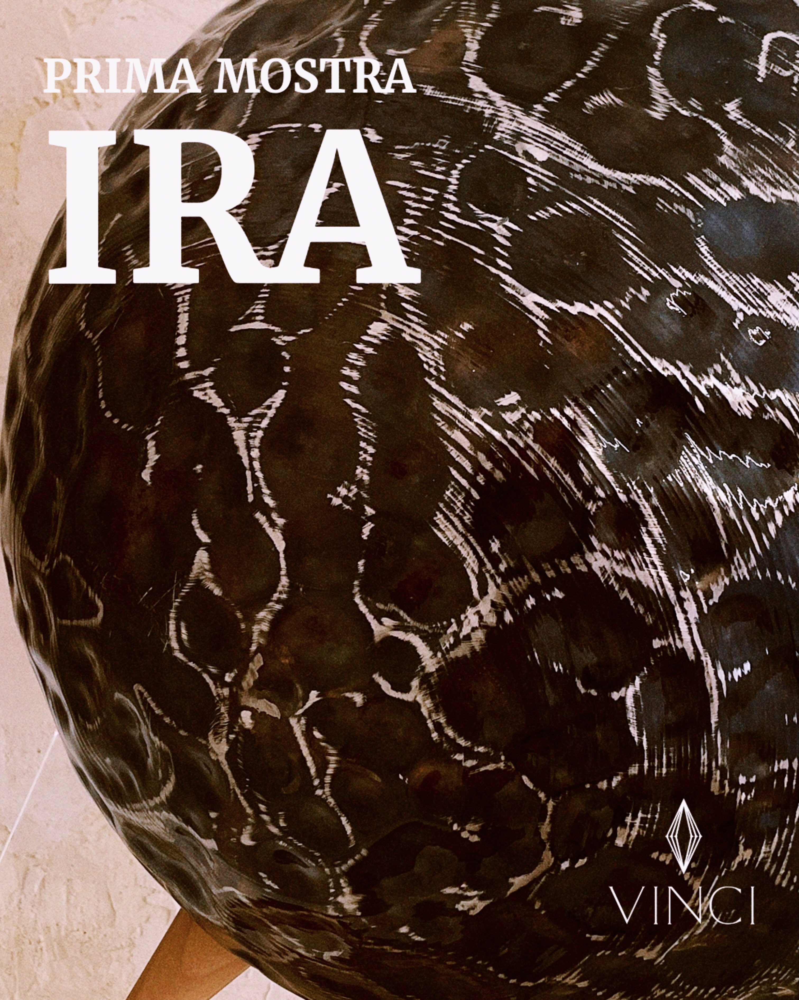

In mostra.

Pane

Sole
Luna
Monte
Sole
Papillon
Pane
IRA.

1 / 4
VINCI ospita IRA, un’opera di design in acciaio di Superfine, marchio specializzato in arredi di lusso per animali domestici.
Alla mostra si accompagna il dolce IRA, ispirato all’opera: cioccolato, praliné di mandorle e crema alle nocciole.
SuperfineCorso Fogazzaro.
Vicenza [Descrizione dello spazio da fornire]
Ci trovi qui.
Orari
Mar–Dom 9:00–13:00
Ven–Sab 17:00–20:00